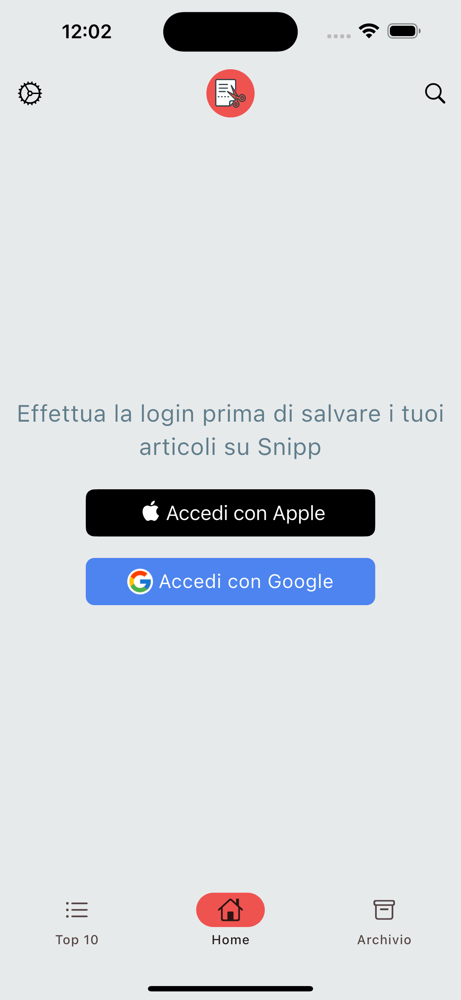

Snipp is a convenient app designed to help you save interesting articles and read them later, without distractions. It cleans up the clutter and ads that typically fill web pages, providing a clean and focused reading experience. With Snipp, you can enjoy your saved articles even when offline, making it perfect for reading anytime, anywhere.
Before you can start saving your favorite articles with Snipp, you’ll need to log in to your account. This screen allows you to sign in securely using either your Apple or Google account. Logging in ensures your saved articles are always available to you, safely synced and ready to read—no matter which device you use. Just tap the Apple or Google button to complete the process. Once logged in, all your articles will be saved to your personal archive in Snipp, ready to access at any time.
